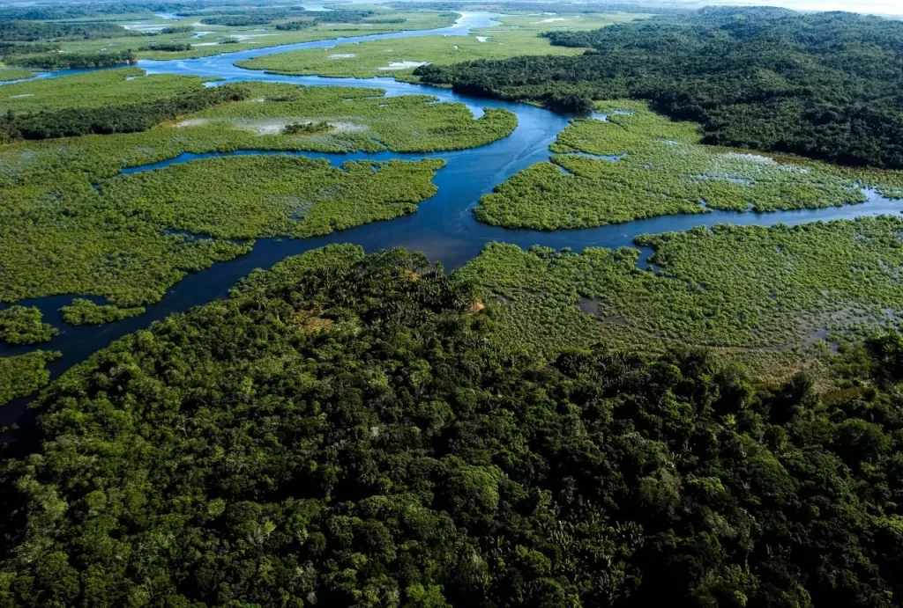
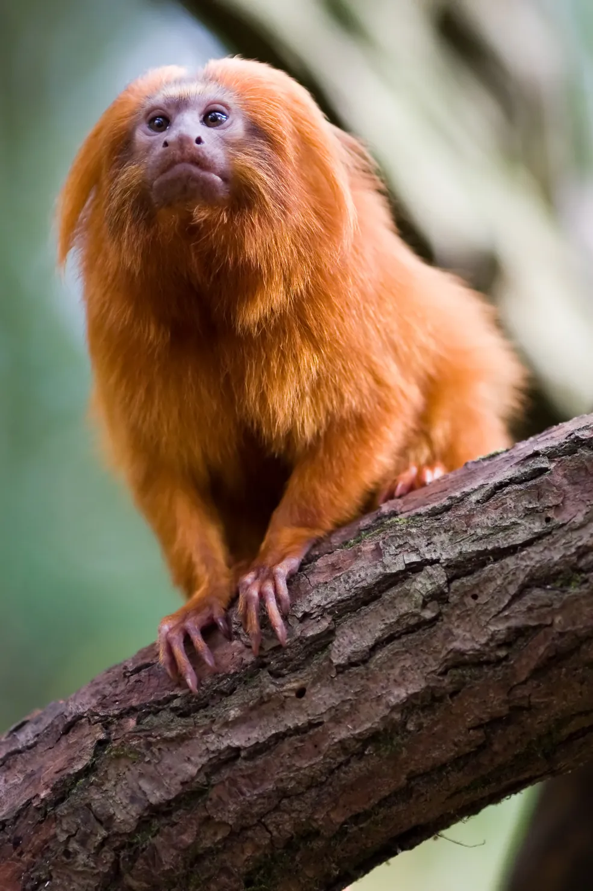
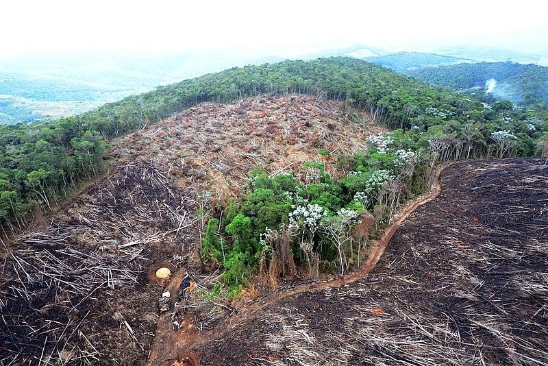

Mata Atlântica

A Mata Atlântica é um bioma, composto por diferentes formações vegetais e ecossistemas associados, que se
destaca por sua grande biodiversidade, incluindo, por exemplo, várias espécies endêmicas (que ocorrem apenas
nessa região). Hoje, devido a uma série de fatores, que incluem, por exemplo, a atividade humana, restam,
segundo a Fundação SOS Mata Atlântica, apenas 12,4% da floresta que existia originalmente.
Características da Mata Atlântica
A Mata Atlântica é um bioma que cobria uma área de 15% do território brasileiro, área essa que incluía os
estados de
Alagoas, Bahia, Ceará, Espírito Santo, Goiás, Mato Grosso do Sul, Minas Gerais, Paraíba, Paraná, Pernambuco,
Piauí,
Rio de Janeiro, Rio Grande do Norte, Rio Grande do Sul, Santa Catarina, São Paulo e Sergipe. Originalmente,
o
referido bioma cobria uma área superior a 1,3 milhões de km2.
A Mata Atlântica é constituída de formações florestais nativas e ecossistemas associados. De acordo com o
Ministério
do Meio Ambiente, entre as formações florestais que fazem parte da Mata Atlântica, podemos citar:
Floresta Ombrófila Densa;
Floresta Ombrófila Mista, também denominada de Mata de Araucárias;
Floresta Ombrófila Aberta;
Floresta Estacional Semidecidual;
Floresta Estacional Decidual.
Já os ecossistemas associados são:
manguezais;
vegetações de restingas;
campos de altitude;
brejos interioranos;
encraves florestais do Nordeste.
Quanto resta da Mata Atlântica?
De acordo com a Fundação SOS Mata Atlântica, atualmente, restam apenas 12,4% da floresta que existia originalmente,
e, desses remanescentes, cerca de 80% estão localizados em áreas privadas. Os 12,4% de floresta
original correspondem a todos os fragmentos de floresta nativa acima de três hectares. Atualmente, os remanescentes
florestais são muito fragmentados.
Segundo o Ministério do Meio Ambiente, atualmente, são encontradas cerca de 29% de cobertura original quando
considerados os diferentes estágios de regeneração das fitofisionomias. Vale destacar que os dados sobre a cobertura
vegetal podem
variar de acordo com o autor e com a metodologia que foi escolhida para esse cálculo.
Leia também: Situação atual da Mata Atlântica
Fauna e flora da Mata Atlântica

A Mata Atlântica caracteriza-se por sua grande biodiversidade, devido, principalmente, às variações ambientais do
bioma. Essas variações acontecem devido à extensão da Mata Atlântica em latitude, longitude e a
variações altitudinais. Estima-se que a biodiversidade da Mata Atlântica corresponda de 1% a 8% da biodiversidade
mundial. Segundo dados do Ministério do Meio Ambiente, encontramos na Mata Atlântica cerca de:
20 mil espécies de vegetais;
850 espécies de aves;
370 espécies de anfíbios;
200 espécies de répteis;
270 espécies de mamíferos;
350 espécies de peixes.
Uma das espécies mais conhecidas de animais da Mata Atlântica é, sem dúvidas, o mico-leão-dourado (Leontopithecus
rosalia), espécie hoje considerada símbolo desse bioma. Essa espécie é endêmica e podia ser encontrada,
originalmente, em toda a região costeira do Rio de Janeiro e sul do Espirito Santo. Além do mico-leão-dourado, podemos
citar, como espécies de animais da Mata Atlântica: sapo-pingo-de-ouro; porco-do-mato; macaco-guicó; pintor-verdadeiro;
macuco; onça-pintada; harpia; tucano; papagaio-de-cara-roxa; muriqui; e sabiá-laranjeira.
No que diz repeito às espécies vegetais, não podemos deixar de citar o pau-brasil (Caesalpinia echinata), que deu
nome ao nosso país. Além do pau-brasil, na Mata Atlântica encontramos várias espécies
de bromélias, orquídeas, samambaias, a araucária e o palmito-juçara.
Importância da Mata Atlântica
A Mata Atlântica é extremamente importante tanto economicamente, quanto ecologicamente. As formações florestais
encontradas na Mata Atlântica ajudam, por exemplo, na regulação do clima e proteção do solo. Não podemos
esquecermo-nos ainda de que sete das nove maiores bacias hidrográficas brasileiras estão na Mata Atlântica, e
a vegetação preservada protege rios e nascentes, garantindo, desse modo, o abastecimento de água para a população.
Nesse bioma, encontramos também uma grade variedade de espécies animais e vegetais que possui diversas aplicações
econômicas. Várias espécies são usadas na alimentação, para obtenção de madeira e como matéria-prima para a
fabricação de medicamentos e cosméticos. Infelizmente, o uso descontrolado da biodiversidade da Mata Atlântica tem
causado grande destruição desse importante bioma.
Degradação da Mata Atlântica
Dentre as ações antrópicas prejudiciais realizadas contra esse bioma, podemos destacar: o desmatamento com a
finalidade de criar áreas propícias para a agricultura e pecuária; a exploração exagerada dos recursos desse local;
e a expansão urbana. No que diz respeito à exploração dos recursos, muitas áreas de Mata Atlântica, por exemplo, foram e são atualmente destruídas com a
finalidade de extração de madeira.
Além do desmatamento, a biodiversidade é também ameaçada de outras formas, como por meio da caça de animais,
da pesca predatória e do tráfico ilegal de plantas e animais nativos da região. Não podemos deixar de citar, ainda,
o turismo desordenado que acaba prejudicando esse biomas por causar danos ao meio ambiente, por exemplo, poluindo o
local
